📖 Profil One Piece
One Piece adalah anime petualangan yang menceritakan perjalanan Monkey D. Luffy, seorang pemuda dengan impian menjadi Raja Bajak Laut dan menemukan harta karun legendaris, One Piece, yang ditinggalkan oleh Gol D. Roger. Setelah memakan Buah Iblis Gomu Gomu no Mi yang memberinya kekuatan lastis seperti karet, Luffy memulai petualangan di Grand Line. Dalam perjalanannya, ia membentuk kru yang disebut Straw Hat Pirates, yang terdiri dari individu dengan impian dan kemampuan unik. Bersama-sama, mereka menghadapi berbagai musuh, mengungkap misteri dunia, dan mengejar tujuan mereka sambil menjunjung tinggi nilai persahabatan, kebebasan, dan keberanian dalam menghadapi rintangan.
Informasi lebih lanjut bisa kamu baca di Wikipedia One Piece .
| Aspek | Informasi |
|---|---|
| Judul | One Piece |
| Penulis | Eiichiro Oda |
| Genre | Aksi, Petualangan, Fantasi |
| Rating | 8.9/10 (IMDb) |
| Jumlah Episode | 1040+ (hingga April 2025) |
| Dimulai | 1997 (Manga) |
| Studio Anime | Toei Animation |
| Adaptasi Lain | Film Live-Action (2023 Netflix) |
👒 Kru Straw Hat Pirates
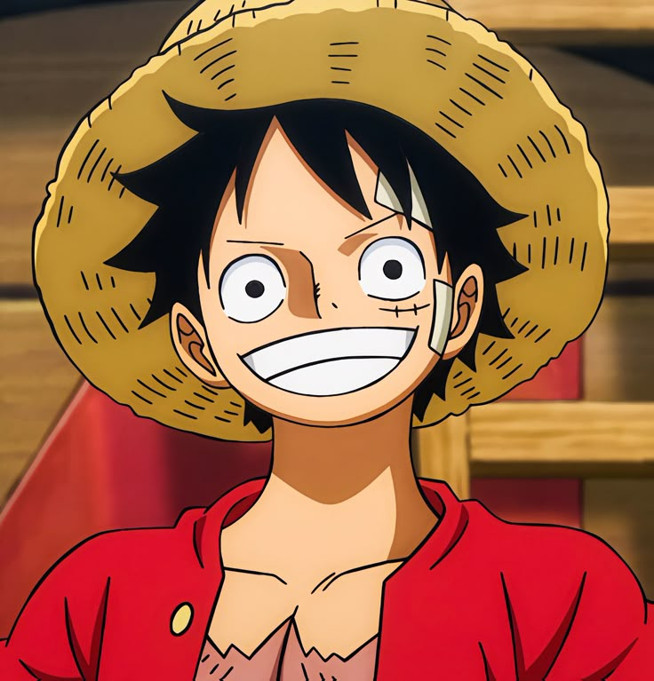
Monkey D. Luffy
Kapten Straw Hat Pirates dengan impian menjadi Raja Bajak Laut. Ia memakan Buah Iblis Gomu Gomu no Mi dan menguasai semua jenis Haki. Bountynya saat ini adalah 3 M Berry.
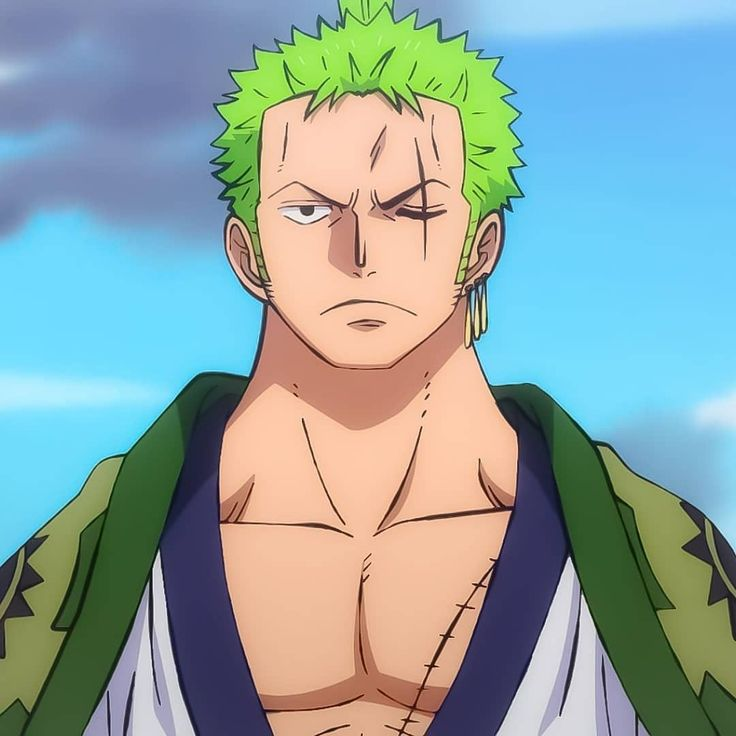
Roronoa Zoro
Pendekar pedang yang ahli menggunakan teknik Santoryu. Ia menguasai Busoshoku Haki dan memiliki kekuatan fisik luar biasa. Bountynya saat ini adalah 1.1 M Berry.
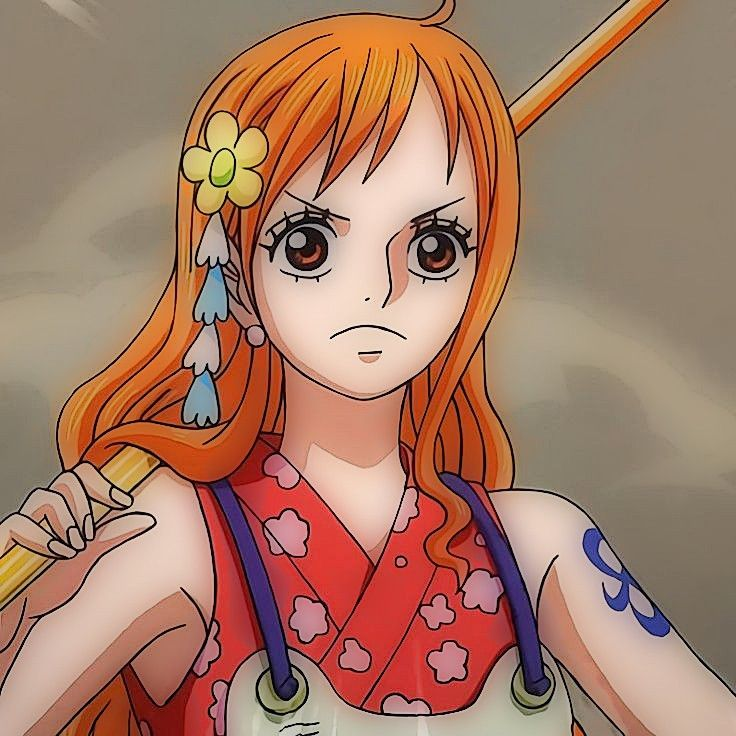
Nami
Navigator kru dengan kemampuan mengendalikan cuaca menggunakan Climatact. Meskipun tidak memiliki Buah Iblis, ia sangat terampil dalam navigasi. Bountynya saat ini adalah 366 jt Berry.
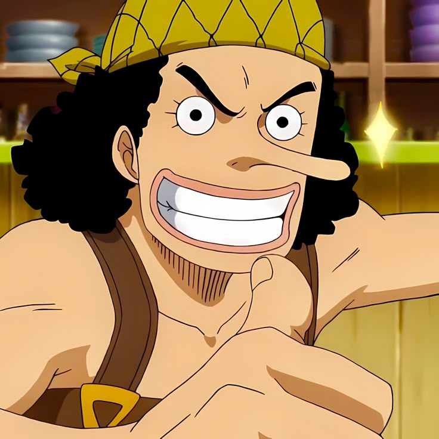
Usopp
Penembak jitu dan ahli dalam membuat senjata. Ia menguasai Kenbunshoku Haki dan memiliki kemampuan berbohong yang luar biasa. Bountynya saat ini adalah 500 jt Berry.
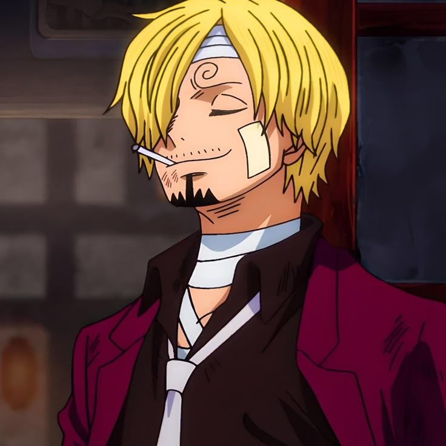
Sanji
Koki dengan kemampuan bertarung Diable Jambe yang memanfaatkan api pada kakinya. Ia juga menguasai Busoshoku Haki. Bountynya saat ini adalah 1.03 M Berry.
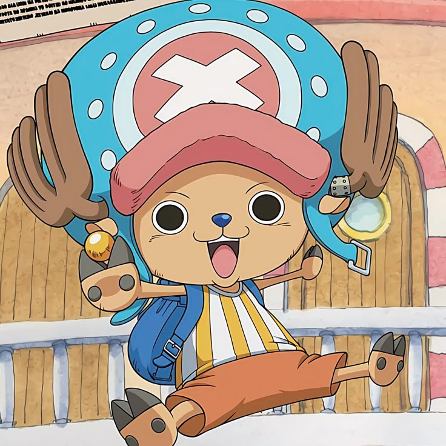
Tony Tony Chopper
Dokter dengan kemampuan berubah bentuk melalui Buah Iblis Hito Hito no Mi. Ia menggunakan Rumble Ball untuk meningkatkan kekuatannya. Bountynya saat ini adalah 1000 Berry.
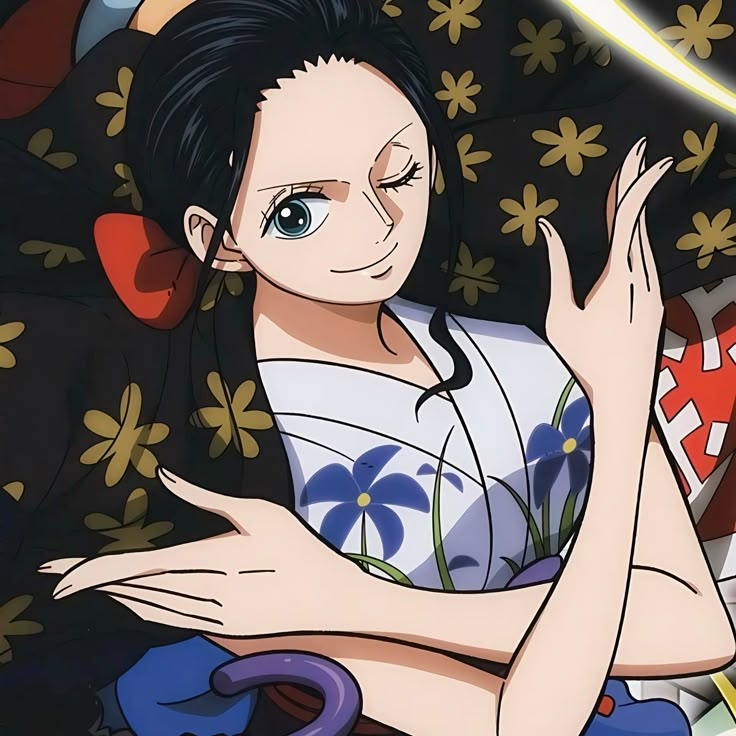
Nico Robin
Arkeolog yang memakan Buah Iblis Hana Hana no Mi, memberinya kemampuan menumbuhkan tubuh di mana saja. Bountynya saat ini adalah 930 jt Berry.

Franky
Tukang kapal dan cyborg dengan berbagai senjata di tubuhnya. Ia tidak memiliki Buah Iblis, namun sangat kuat dalam pertempuran. Bountynya saat ini adalah 394 jt Berry.
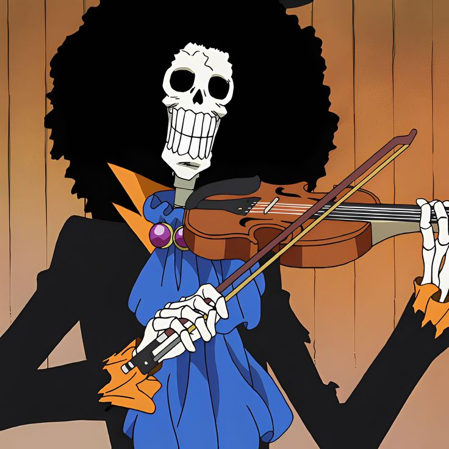
Brook
Musisi dan swordsman berbentuk tengkorak yang memakan Buah Iblis Yomi Yomi no Mi, memberinya kemampuan hidup kembali setelah mati. Bountynya saat ini adalah 383 jt Berry.
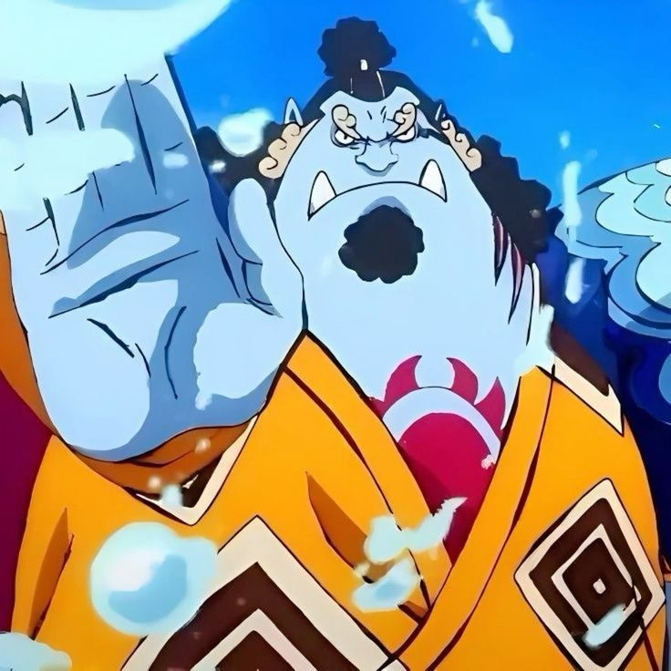
Jinbe
Ahli bela diri Karate dan pengemudi kapal yang merupakan seorang manusia ikan. Tanpa Buah Iblis, Jinbei memiliki kekuatan fisik luar biasa. Bountynya saat ini adalah 1.1 M Berry.
📜 Semua Arc Utama
- East Blue Saga: Awal petualangan Luffy, mulai merekrut kru pertama seperti Zoro, Nami, Usopp, dan Sanji.
- Alabasta Saga: Melawan Crocodile dan Baroque Works untuk menyelamatkan Kerajaan Alabasta bersama Vivi.
- Sky Island Saga: Petualangan menuju pulau langit Skypiea dan melawan Enel, penguasa yang menganggap dirinya dewa.
- Water 7 & Enies Lobby Saga: Konflik internal kru, perpisahan sementara dengan Going Merry, dan pertarungan epik untuk menyelamatkan Robin dari CP9.
- Thriller Bark Saga: Melawan Gecko Moria dan Oars, Brook bergabung sebagai musisi kru.
- Summit War Saga: Insiden besar di Sabaody, penjara Impel Down, hingga Perang Marineford; Ace tewas, Luffy terpukul berat, dan dunia berubah besar-besaran.
- Fish-Man Island Saga: Petualangan bawah laut pertama setelah time skip, melawan Hody Jones dan menyelamatkan pulau dari kebencian rasial.
- Dressrosa Saga: Melawan Doflamingo, menyelamatkan rakyat Dressrosa, dan membentuk aliansi dengan Trafalgar Law.
- Whole Cake Island Saga: Misi menyelamatkan Sanji dari pernikahan politik dengan Big Mom, serta konfrontasi melawan salah satu Yonko.
- Wano Country Saga: Aliansi besar dibentuk untuk menggulingkan Kaido dan Orochi, pertarungan skala besar yang mengubah keseimbangan dunia.
- Final Saga (Sekarang): Perjalanan menuju akhir; menguak rahasia Vegapunk, Pemerintah Dunia, dan Will of D.
🔍 Fakta & Teori Menarik
- Orang-orang yang memiliki inisial “D.” di namanya, seperti Monkey D. Luffy, Gol D. Roger, dan Marshall D. Teach, dianggap sebagai musuh alami para dewa, yaitu para bangsawan langit (Tenryuubito). Mereka disebut sebagai pembawa kehancuran bagi sistem dunia saat ini.
- Meskipun Dunia One Piece dipimpin oleh Pemerintah Dunia dan para Gorosei (5 Tetua), ternyata ada satu sosok misterius bernama Imu-sama, yang diam-diam memegang kendali tertinggi atas seluruh dunia.
- Buah Gomu Gomu no Mi ternyata adalah Hito Hito no Mi, Model: Nika, yaitu buah mitos tipe Zoan yang memberi kekuatan dewa matahari dan kebebasan total — bukan sekadar tubuh karet seperti yang dikira selama ini.
- Joy Boy adalah tokoh penting dari abad kekosongan (Void Century), yang meninggalkan pesan di Poneglyph dan diyakini sebagai pelindung kebebasan. Luffy dianggap sebagai penerus kehendak Joy Boy.
- Pulau terakhir di Grand Line, tempat One Piece berada, awalnya disebut Raftel. Namun, nama aslinya adalah Laugh Tale, yang mengisyaratkan bahwa harta karun terbesar mungkin berkaitan dengan tawa atau kebebasan sejati.
- Ada tiga senjata kuno yang disebut-sebut bisa mengguncang dunia: Pluton, Poseidon (yang ternyata adalah Shirahoshi), dan Uranus. Senjata ini sangat ditakuti oleh Pemerintah Dunia. Dan berbagai fakta dan teori lainnya.
🎨 Galeri
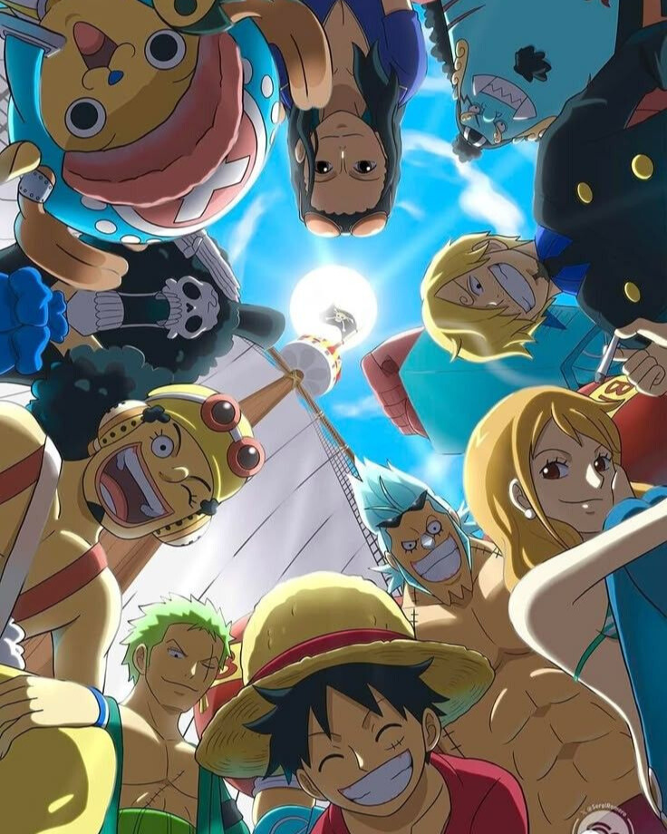
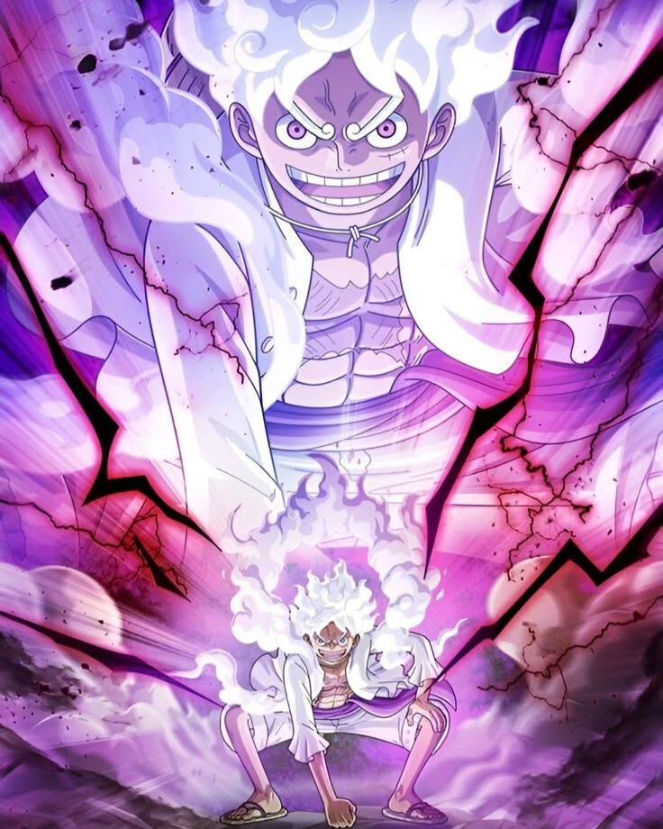
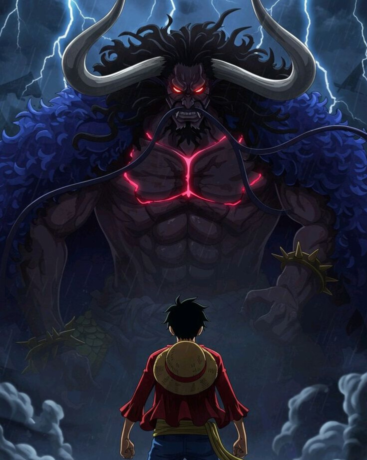


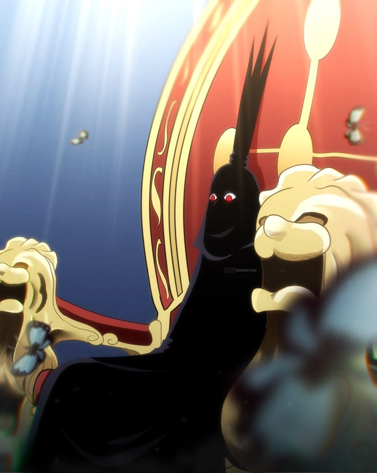